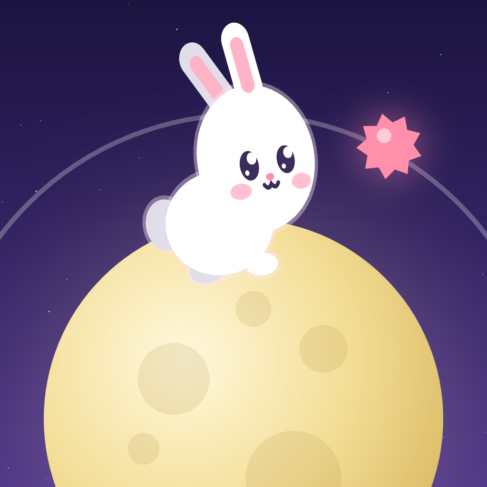
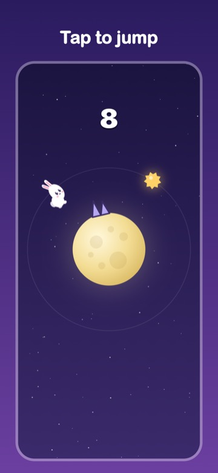
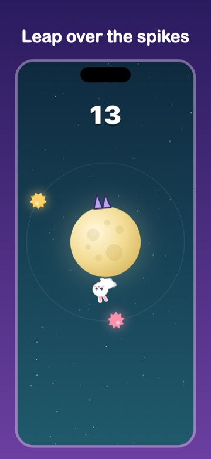
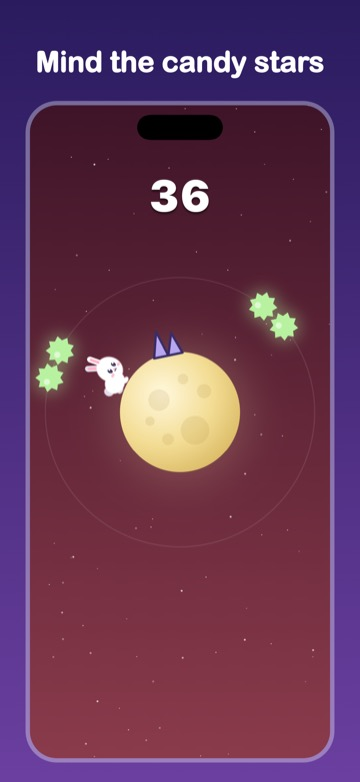
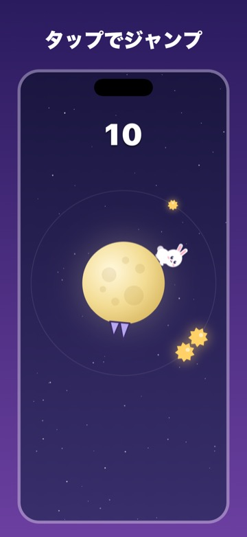
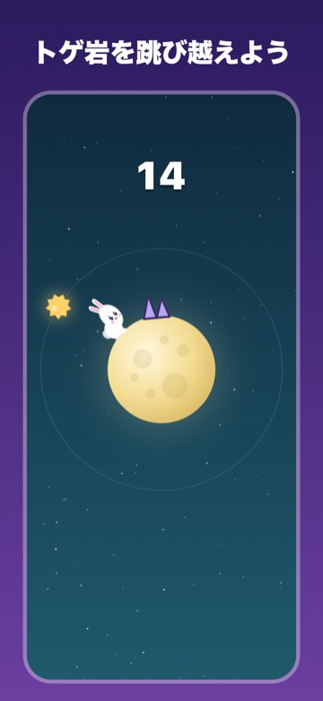
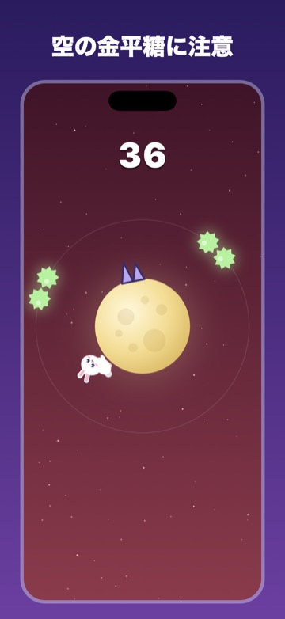
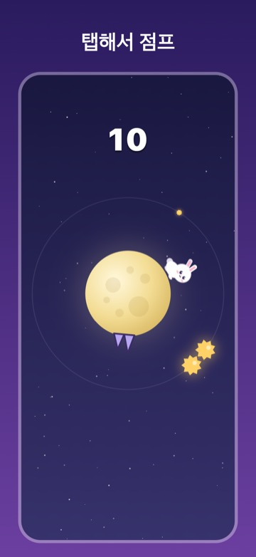
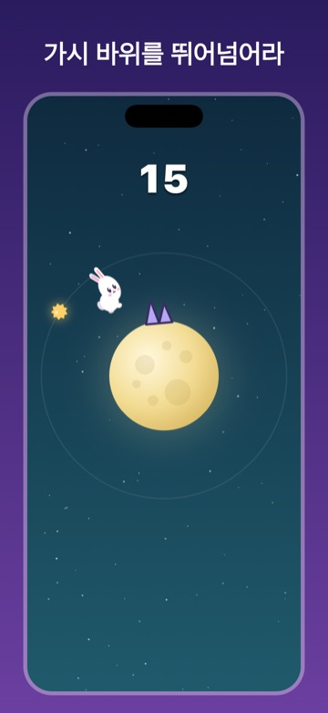
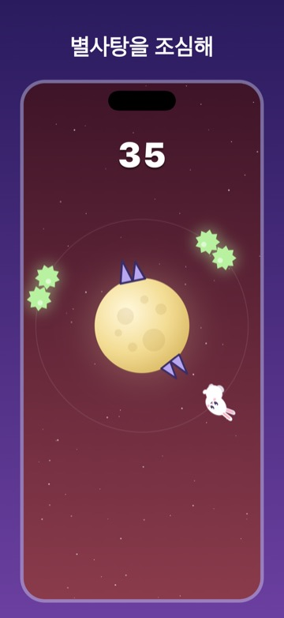

Moon Rabbit Hop
つきうさホップ · 달토끼 점프
Download on the App StoreFree · iPhone (iOS 15+)
A one-tap jumping game on the moon



Help a little rabbit run around the moon with just one tap. Jump over the spiky rocks, but don't be in the air when you pass under a candy star. The higher your score, the faster the rabbit runs. Most runs last under a minute.
How to play
- Tap anywhere to jump
- Jump over spiky rocks; stay on the ground under candy stars
- Clear an obstacle, score a point
- Unlock 6 rabbits, including Sakura, Yomogi and Gold, by beating your best score
- Compete with players worldwide on the Game Center leaderboard
FAQ
- Is it free?
- Yes. It shows ads, and you can remove them with a one-time purchase (Remove Ads) in Settings.
- Can I play offline?
- Yes. Ads and the leaderboard need a connection.
- Which devices?
- iPhone with iOS 15.0 or later.
タップで跳ぶ、月うさぎのジャンプゲーム



月のまわりを走るうさぎを、タップひとつでジャンプさせるゲームです。月面のトゲ岩は跳び越え、空に浮かぶ金平糖の下では跳ばないようにします。スコアが上がるにつれてスピードも上がります。1回のプレイはたいてい1分もかかりません。
遊び方
- 画面をタップするとジャンプします
- トゲ岩は跳び越え、金平糖の下では跳ばないようにします
- 障害物をひとつよけるごとに1点です
- ベストスコアに応じて、さくら・よもぎ・きんなど6種類のうさぎが使えるようになります
- Game Center のランキングで、世界中のプレイヤーとスコアを競えます
よくある質問
- 無料で遊べますか？
- はい。広告が表示されます。設定画面の「広告を削除」を一度購入すると、広告が出なくなります。
- オフラインでも遊べますか？
- はい。広告とランキングにはインターネット接続が必要です。
- 対応機種は？
- iOS 15.0 以降の iPhone です。
탭 한 번으로 점프하는 달토끼



달 둘레를 달리는 토끼를 탭 한 번으로 점프시키는 게임입니다. 가시 바위는 뛰어넘고, 하늘에 뜬 별사탕 아래에서는 뛰지 않아야 합니다. 점수가 오를수록 빨라집니다. 한 판은 대부분 1분 안에 끝납니다.
플레이 방법
- 화면을 탭하면 점프
- 가시 바위는 뛰어넘고, 별사탕 아래에서는 뛰지 않기
- 장애물 하나를 피할 때마다 1점
- 최고 기록에 따라 벚꽃·쑥·황금 등 토끼 6종이 열립니다
- Game Center 랭킹에서 전 세계 플레이어와 점수를 겨룰 수 있습니다
자주 묻는 질문
- 무료인가요?
- 네. 광고가 나오며, 설정의 '광고 제거'를 한 번 구매하면 광고가 사라집니다.
- 오프라인에서도 되나요?
- 네. 광고와 랭킹은 인터넷 연결이 필요합니다.
- 지원 기기는?
- iOS 15.0 이상의 iPhone입니다.